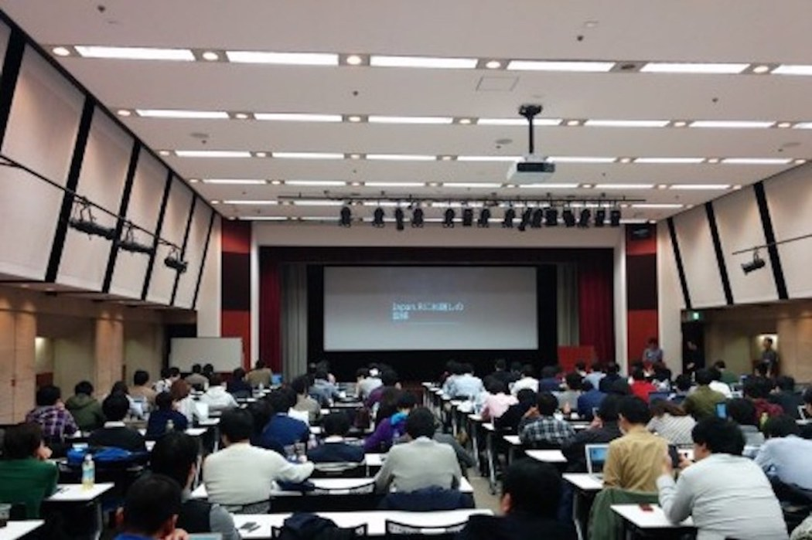

Japan.R is an anual conference of R, a statistical softfare. In this conference, the organizers and participants of local communities of R get together. There are many local communities in Japan:
Japan.R 2015

In Japan.R 2016, there were 24 talks. Moreover, over 200 R users joined and had a great time!